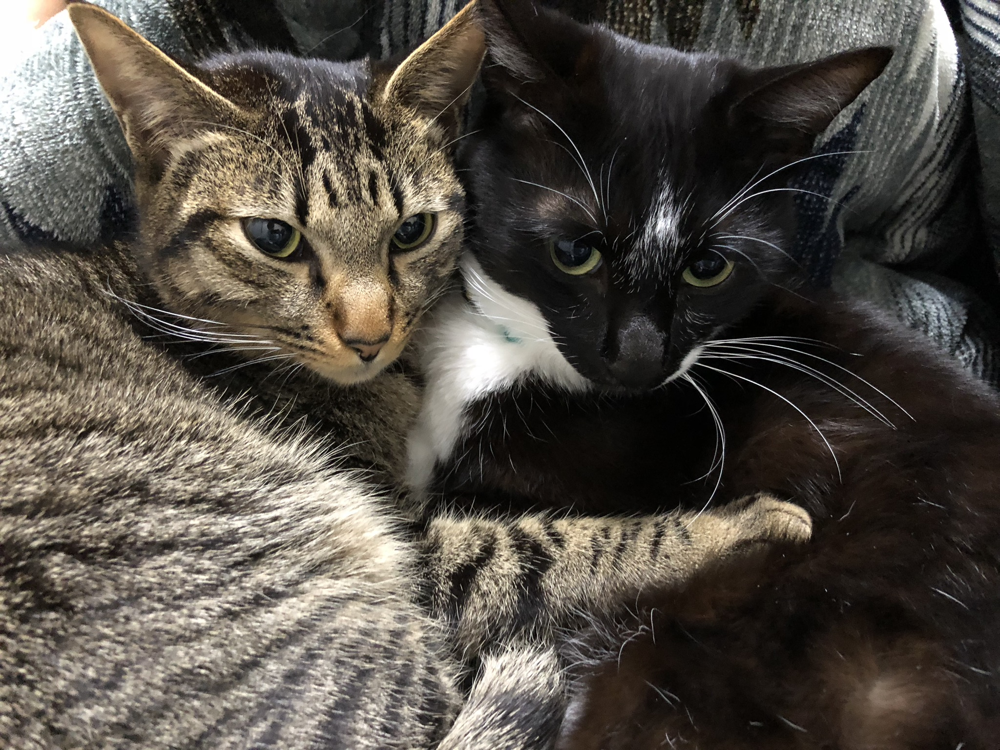

2016年に産まれた2人。捨て猫だった2人は、縁合って我が家で引き取ることに。
2016年に産まれた2人。捨て猫だった2人は、縁合って我が家で引き取ることに。
2人仲良く、のんびりすくすく成長中。
2016年7月
ロン誕生
2016年7月、ロンが誕生と思われる月です。
正確な誕生日は不明なので、飼い主が勝手に7月7日を誕生日にしました。
2016年8月
ハク誕生
ハクが誕生したと思われる月です。
ロン同様、正確な誕生日は不明のため、こちらも8月8日を勝手に誕生日としました。
2016年9月
出会い
2人を拾ってくれた方とは直接面識はありませんでしたが、友人からの縁があり2人を引き取ることになりました。
- 1
- 2
- 3
- 次へ